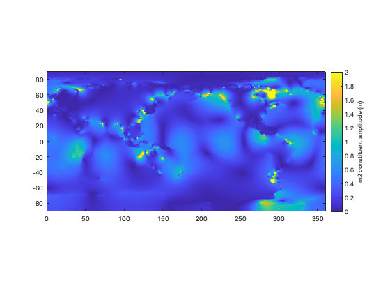
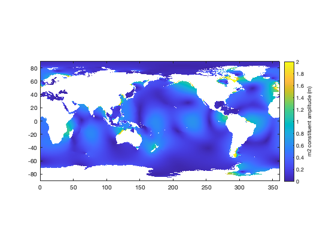

TMD3.0 Model File Format
This page describes the NetCDF data format for TMD3.0 compatible tide model files.
Back to Tide Model Driver Contents.
Contents
Explore file contents
Take a look inside any TMD3.0 compatible NetCDF, and the contents should be fairly straightforward. Here's an example:
ncdisp('TPXO9_atlas_v5.nc')
Source:
/Users/cgreene/Documents/data/tides/TPXO9_atlas_v5.nc
Format:
netcdf4_classic
Global Attributes:
Conventions = 'CF-1.7'
Title = 'TPXO9_atlas_v5'
Description = 'Global tide model at 1/30 degree resolution.'
Author = 'Egbert, Gary D., and Svetlana Y. Erofeeva.'
creation_date = '2023-04-15'
tmd_version = 3
NetCDF_conversion = 'Chad A. Greene'
model_type = 'ocean'
license = 'ask'
Data_citation = 'Egbert, Gary D., and Svetlana Y. Erofeeva. "Efficient inverse modeling of barotropic ocean tides." Journal of Atmospheric and Oceanic Technology 19.2 (2002): 183-204.'
Dimensions:
lon = 10802
lat = 5401
constituents = 15
Variables:
mapping
Size: 1x1
Dimensions:
Datatype: char
Attributes:
grid_mapping_name = 'latitude_longitude'
epsg_code = 4326
spatial_proj4 = '+proj=longlat +ellps=WGS84 +datum=WGS84 +no_defs'
lon
Size: 10802x1
Dimensions: lon
Datatype: single
Attributes:
standard_name = 'longitude'
long_name = 'grid cell center longitude (first and last columns are repeats, to enable seamless interpolation)'
units = 'degrees'
lat
Size: 5401x1
Dimensions: lat
Datatype: single
Attributes:
standard_name = 'latitude'
long_name = 'grid cell center latitude'
units = 'degrees'
constituents
Size: 15x1
Dimensions: constituents
Datatype: int8
Attributes:
standard_name = 'tidal_constituents'
long_name = 'Tidal constituents listed in order in the constituent_order attribute.'
constituent_order = '2n2 k1 k2 m2 m4 mf mm mn4 ms4 n2 o1 p1 q1 s1 s2'
amplitude
Size: 15x1
Dimensions: constituents
Datatype: double
Attributes:
standard_name = 'amplitude'
long_name = 'amplitude of equilibrium tide in m for each tidal constituent.'
units = 'meters'
phase
Size: 15x1
Dimensions: constituents
Datatype: double
Attributes:
standard_name = 'phase'
long_name = 'Astronomical arguments (relative to t0 = 1 Jan 0:00 1992)'
units = 'radians'
omega
Size: 15x1
Dimensions: constituents
Datatype: single
Attributes:
standard_name = 'omega'
long_name = 'frequency'
units = '1/s'
alpha
Size: 15x1
Dimensions: constituents
Datatype: single
Attributes:
standard_name = 'alpha'
long_name = 'loading love number'
hRe
Size: 10802x5401x15
Dimensions: lon,lat,constituents
Datatype: int16
Attributes:
standard_name = 'height_coefficient'
long_name = 'real component of height constituent'
grid_mapping = 'polar_stereographic'
units = 'm'
scale_factor = 0.00030746
hIm
Size: 10802x5401x15
Dimensions: lon,lat,constituents
Datatype: int16
Attributes:
standard_name = 'height_coefficient'
long_name = 'imaginary component of height constituent'
grid_mapping = 'polar_stereographic'
units = 'm'
scale_factor = 0.00030746
URe
Size: 10802x5401x15
Dimensions: lon,lat,constituents
Datatype: int16
Attributes:
standard_name = 'transport_coefficient'
long_name = 'real component of U transport constituent. This is the zonal (east-west) flow component in geographic coordinates.'
grid_mapping = 'polar_stereographic'
units = 'm^2/s'
scale_factor = 0.015712
UIm
Size: 10802x5401x15
Dimensions: lon,lat,constituents
Datatype: int16
Attributes:
standard_name = 'transport_coefficient'
long_name = 'imaginary component of U transport constituent. This is the zonal (east-west) flow component in geographic coordinates.'
grid_mapping = 'polar_stereographic'
units = 'm^2/s'
scale_factor = 0.015712
VRe
Size: 10802x5401x15
Dimensions: lon,lat,constituents
Datatype: int16
Attributes:
standard_name = 'transport_coefficient'
long_name = 'real component of V transport constituent. This is the meridional (north-south) flow component in geographic coordinates.'
grid_mapping = 'polar_stereographic'
units = 'm^2/s'
scale_factor = 0.015712
VIm
Size: 10802x5401x15
Dimensions: lon,lat,constituents
Datatype: int16
Attributes:
standard_name = 'transport_coefficient'
long_name = 'imaginary component of V transport constituent. This is the meridional (north-south) flow component in geographic coordinates.'
grid_mapping = 'polar_stereographic'
units = 'm^2/s'
scale_factor = 0.015712
wct
Size: 10802x5401
Dimensions: lon,lat
Datatype: int16
Attributes:
standard_name = 'wct'
long_name = 'water column thickness'
units = 'meters'
grid_mapping = 'polar_stereographic'
mask
Size: 10802x5401
Dimensions: lon,lat
Datatype: int8
Attributes:
standard_name = 'ocean_mask'
long_name = 'ocean mask'
grid_mapping = 'polar_stereographic'
valid_range = [0 1]
flag_values = [0 1]
flag_meanings = 'land ocean'
The attributes above should be pretty straightforward, but I'll point out that the model_type can either be 'ocean' or 'load'.
Global models vs regional models
All model files are either global or regional. Global models, like the one above, are presented on a regular grid in geographic coordinates (degrees) and have 1D lon and lat variables. For global models, longitude is treated like the x dimension, and latitude is treated like the y dimension.
Regional models (CATS, Arctic models, etc) can be on regular geographic grids, but are often presented on grids that are regular in projected coordinates, meaning they are spaced equally in meters or kilometers. The proj4 string in the NetCDF file describes the projection parameters for any regional model. Regional models also include MxN arrays of latitude and longitude values.
In both global and regional models, all coordinates correspond to grid cell centers.
Most TMD functions accept latitude and longitude as inputs, and automatically project them to regional model coordinates where necessary.
Constituents
The tidal constituents are easy to miss in the NetCDF. They appear as a simple string, in the constituent_order attribute of the constituents variable. Here's how to access them:
ncreadatt('TPXO9_atlas_v5.nc','constituents','constituent_order')
ans =
'2n2 k1 k2 m2 m4 mf mm mn4 ms4 n2 o1 p1 q1 s1 s2'
Constituents can also be accessed as cell arrays using the tmd_conlist function:
cons = tmd_conlist('TPXO9_atlas_v5.nc')
cons =
1×15 cell array
Columns 1 through 7
{'2n2'} {'k1'} {'k2'} {'m2'} {'m4'} {'mf'} {'mm'}
Columns 8 through 14
{'mn4'} {'ms4'} {'n2'} {'o1'} {'p1'} {'q1'} {'s1'}
Column 15
{'s2'}
I realize this is a somewhat strange way to package the constituent names, but it's the simplest way I could figure out how to do it, given the limitations of the NetCDF format.
Real and Imaginary Components
For tidal height h, zonal transport U, and meridional transport V, you'll find real and imaginary components hRe, hIm, URe, UIm, VRe, and VIm in the model file. The complex constituent can then be constucted following the format
hc = complex(hRe,hIm);
or
hc = hRe + 1i*hIm;
and the amplitude is then
hAm = abs(hc);
and the phase is given by
hPh = angle(hc);
Note: Some conventions use the complex conjugate of hc, and calculate phase angle as atan2(-imag(h), real(h)), but TMD3.0 uses a convention that matches MATLAB's built-in complex and angle functions.
U and V variables
Each tide model file contains real and imaginary components of U and V transport variables, whose units are m^2/s.
Regardless of whether the model is global or regional, U and V always correspond to zonal (positive pointing geographic east) and meridional (positive pointing geographic north) components of transport.
Transport estimates are usually pretty good, and represent column-averaged (barotropic) flow. Column-averaged velocities are obtained by dividing transport by water column thickness, so the accuracy of velocity estimates is subject to the accuracy of the bathymetry estimate.
TMD3.0 model file format does not account for vertical variations in tidal transport or current velocity. In other words, this is a strictly barotropic model, and does not attempt to represent baroclinic flow.
Important: Previous versions of TMD interpreted U and V on staggered grids, in which each variable would be interpolated at a location offset by half a pixel. In the new, consolidated NetCDF format, all variables are centered on their respective coordinates.
Units
TMD3.0 uses meters, seconds, and combinations of meters and seconds. Previous versions of TMD produced tidal currents in cm/s, but we now package transports in units of m^2/s, so they may easily be divided by water column thickness (m), to get velocities of m/s.
Masks
TMD does something new with masking: The scripts that create each model file use regionfill to interpolate values of tidal constituents across all land areas.
Here's what the m2 constituent amplitude looks like in the TPXO9 file:
[ph,lon,lat] = tmd_data('TPXO9_atlas_v5.nc','hAm','constituents','m2'); figure h=imagesc(lon,lat,ph); axis xy image caxis([0 2]) cb = colorbar; ylabel(cb,'m2 constituent amplitude (m)')
Why on Earth would we say there's a finite, nonzero tidal amplitude in the middle of China, or any other landmass? Well, the reason's quite simple: Sometimes you may be interested in tides that are close to shore, for example, if you have a tide gauge at the end of a dock that may lie between modeled ocean and land pixels. In such a case, you know that tides exist there, but the tide model would only produce NaNs. You could extrapolate from the nearest grid cell that produces a finite tide solution, but that'd be inelegant and almost certainly wrong. The regionfill approach produces smoother, more physical interpolation close to the coast and is a reasonable approximation where the underlying tide model cannot offer a solution.
Note that we only fill the landmasses for tidal heights (h, not U or V), because tidal height predictions should be reasonable in a narrow, tidal inland creek that the mask identifies as land, whereas inland transport values would depend on geometry that was not represented in the model.
The tmd_interp function sets land areas to NaN by default (but offers an option to "unmask"). For your tidal needs, you may wish to mask out land areas using the mask variable, which is 1 for all ocean grid cells, and 0 everywhe else. Below I'm using the mask to set the transparency of the previous image:
[mask,lon,lat] = tmd_data('TPXO9_atlas_v5.nc','mask'); h.AlphaData = mask;
Amplitude, phase, alpha, and omega
In each TMD3.0 compatible model file, you will find variables called amplitude, phase, omega, and alpha. You probably won't need to interact with these variables directly, but they are from the tmd_constit function.
scale_factor
The real and imaginary components of h, U, and V are all scaled by a strange number listed as the scale_factor of each variable. MATLAB automatically parses the scale_factor when reading in the variables, so you don't have to worry about multiplying anything by anything.
Why isn't the scale factor a simple round number? Because it doesn't have to be. Again, you don't have to worry about the scale_factor. The value of the scale factor is chosen to take advantage of the full range of the int16 Datatype that it's saved as. Any other scale factor would either clip the large values, or digitize the data at lower precision than necessary.
Extra columns in global models
You may notice that global model files have an extra grid cell on each end, corresponding to an extra longitude step before 0 and after 360. This rationale is that interpolation near 0 degrees longitude would produce NaNs, and you'd end up with a seam of missing data at that lontitude.
The trick of repeating a few rows or columns around the 0 degree longitude is an old one, and it could be performed after loading the data, rather than saving the data. However, tmd_interp only loads pixels around query points, so the simplest solution is to repeat the data in the data file, rather than writing tmd_interp to call tmd_data multiple times and stitch the pieces together before interpolation.
Ice Shelf Flexure
For the CATS model, we have added a flexure variable. This is a first-order estimate of tidal flexure of ice shelves in the grounding zone, generated by appling a simple 1D linear elastic model to BedMachine v3 ice thickness, assuming an elastic modulus of E=4.8 GPa and Poisson's ratio nu = 0.4. Values range from zero to about 100, corresponding to the percent of tidal range that the ice shelf should exhibit. Values can exceed 100 by a few percent near the hydrostatic line.
Author Info
This document was written by Chad A. Greene, June 2022.